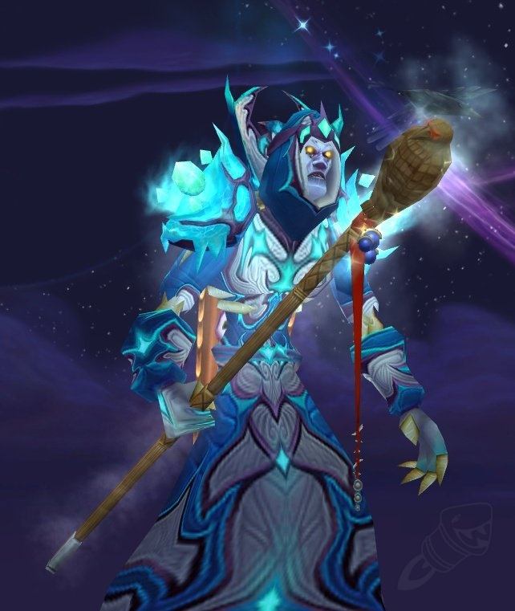

Atiesh, Greatstaff of the Guardian

IF YOU CANNOT TAKE UP THIS CUP, THEN I SHALL FIND ANOTHER WHO WILL
A legendary staff once wielded by Medivh, the last Guardian of Tirisfal. Those skillful in the arcane will be able to unlock
its power and the many secrets held within.
Ingredients
- Frame of Atiesh
- Base of Atiesh
- Staff Head of Atiesh
Steps
- Confront the nightmares of Naxxramas and obtain 40 Splinters of Atiesh.
- Turn the Splinters of Atiesh into the Frame of Atiesh.
- Seek out Anachronos in Tanaris to start the quest to rebuild the staff.
- Traverse Cthun's lair in the Temple of Ahn'Qiraj and claim the Base of Atiesh from his corpse.
- Return to Naxxramas and best Kel'Thuzad in order to retrieve the Staff Head of Atiesh.
- Combine the pieces of the staff you have gathered into a tainted version.
- Travel to Stratholme, summon the demon Atiesh, and slay him to cleanse Sargeras' corruption from the staff.
- Return to Anachronos and claim your reward: Atiesh, Greatstaff of the Guardian!